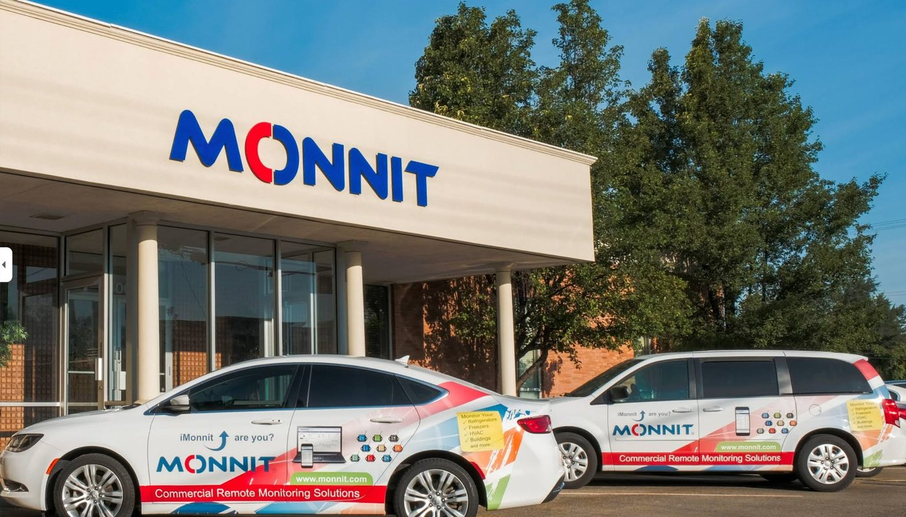
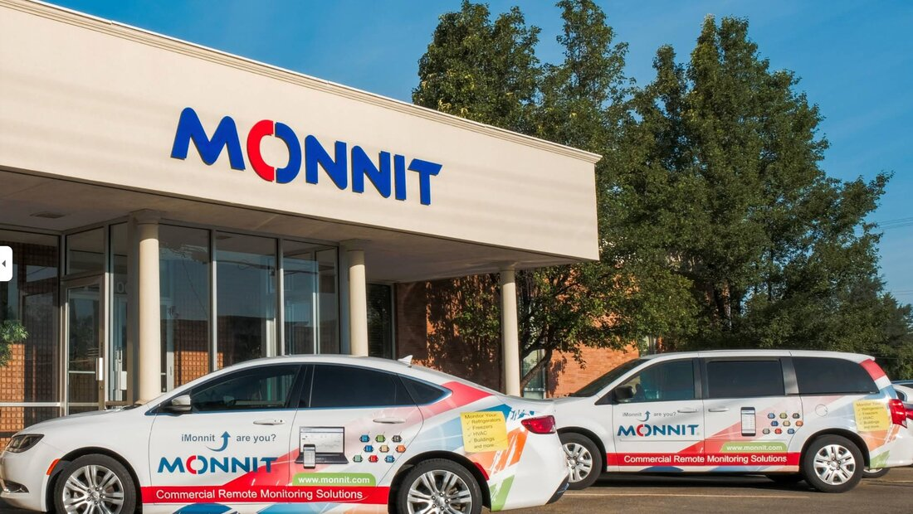
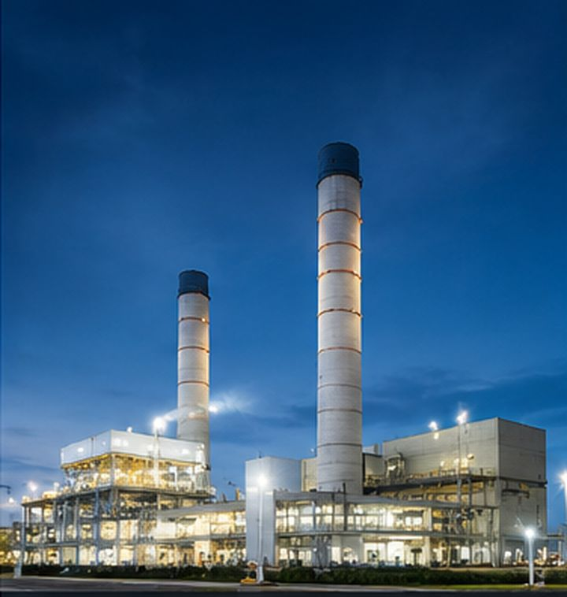
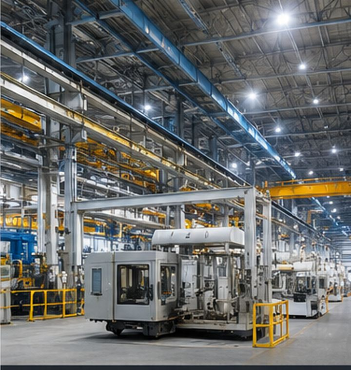
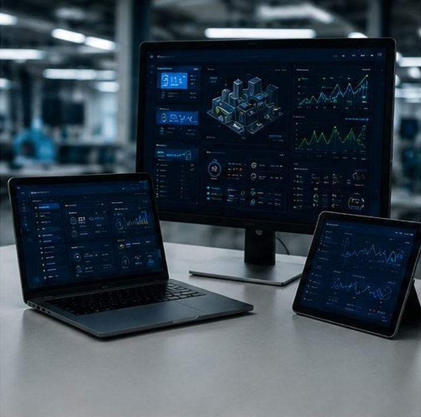
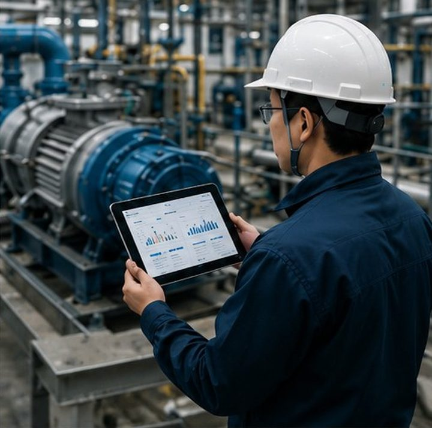
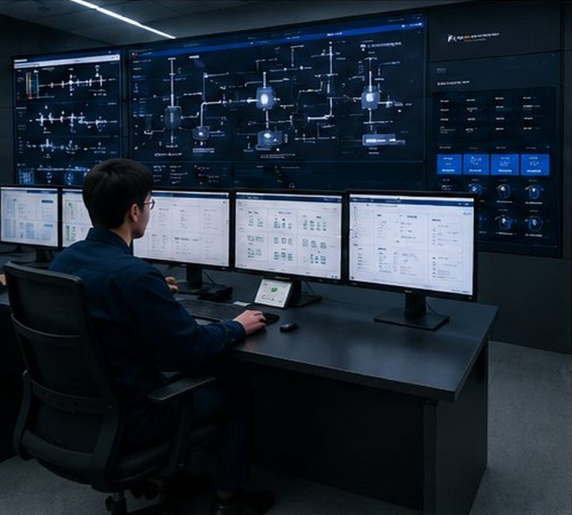
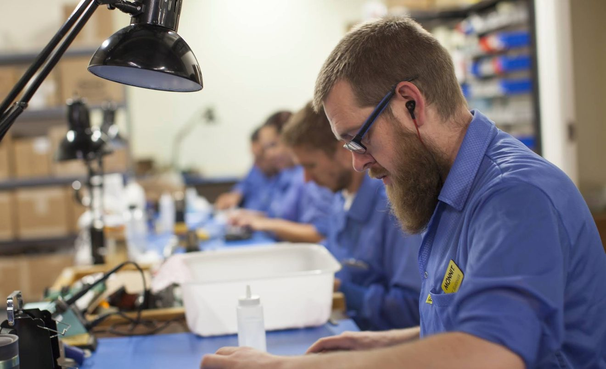

01
사고 사전예방
현장 데이터를 실시간 AI 기반 분석으로 진단해, 사고가 발생하기 전에 미리 예방합니다.
현장을 이해하는 전문가 그룹의 맞춤형 무선 IoT 통합 솔루션 — 실시간 통합관제, 자동제어, AI 예지보전을 한 번에.
현장 데이터를 실시간 AI 기반 분석으로 진단해, 사고가 발생하기 전에 미리 예방합니다.

에너지 사용량 최적화와 인력 운영 효율화를 통해 운영 비용을 절감합니다.
데이터 기반 예지보전과 패트롤 출동으로 현장의 문제를 사전에 해결합니다.
어떠한 설비·장소에서도 데이터를 추출해 실행 가능한 인사이트를 도출합니다.


전 세계 130여 개국에 솔루션을 납품하는 산업용 무선 센싱 분야의 글로벌 리더입니다.
64,000여 고객사, 280여 종의 다양한 산업군에 솔루션을 공급하며 현장에서 검증되었습니다.
일 750억 개의 데이터 포인트를 생성·분석하여 설비 고장을 사전에 예측하는 AI 예지보전을 구현합니다.
밀리터리 그레이드 신뢰성으로 미군 부대 핵심 전략 자산 모니터링에 전용 납품하고 있습니다.



15년간 다양한 산업 현장에서 작동하도록 발전해 온 강력한 펌웨어와 내구성으로, 어떤 환경에서도 안정적으로 동작합니다.
자체 개발한 주파수 호핑 스펙트럼 기술로, 잘 끊기고 불안정한 기존 무선 센서의 한계를 극복했습니다.
엣지 게이트웨이가 서버 통신 없이 현장 BMS에 직접 연동해 제어하고, AI 학습 기반 제어로 에너지 효율을 최적화하며 사고를 사전에 예방합니다.
미군 부대를 비롯해 삼성·현대·청와대 등 보안이 생명인 극도로 까다로운 고객사가 선택한 제품입니다.
FM, 보험사, 학교, 군부대, 대기업 현장, 프랜차이즈, 에너지 및 인프라 분야에서 수천~수만 개 사이트(2,000~15,000개)를 단일 플랫폼으로 통합 관제하는 대형 IoT·원격 모니터링 프로젝트를 성공적으로 수행 및 운영 중입니다.
15년 경력의 업계 전문 컨설턴트가 고객사의 문제를 정확히 진단해 확실한 솔루션을 제시하고 해결까지 책임집니다.
산업용 무선 센서와 IoT 플랫폼 분야에서 매년 세계적인 어워드를 이어가고 있습니다. 2026년 'IoT Sensor Company of the Year'를 연속 수상하며, 기술력과 신뢰성을 다시 한 번 입증했습니다.
 SK하이닉스
SK하이닉스 삼성SDS
삼성SDS 현대건설
현대건설 현대산업개발
현대산업개발 현대
현대 카카오
카카오 SK가스
SK가스 SK플래닛
SK플래닛 SK쉴더스
SK쉴더스 코오롱
코오롱 풀무원
풀무원 CJ피드앤케어
CJ피드앤케어 삼양패키징
삼양패키징 3M
3M 비츠로셀
비츠로셀 동원건설산업SK하이닉스삼성SDS현대건설현대산업개발현대카카오SK가스SK플래닛SK쉴더스코오롱풀무원CJ피드앤케어삼양패키징3M비츠로셀동원건설산업
동원건설산업SK하이닉스삼성SDS현대건설현대산업개발현대카카오SK가스SK플래닛SK쉴더스코오롱풀무원CJ피드앤케어삼양패키징3M비츠로셀동원건설산업제조부터 에너지, 바이오, 유통, 데이터센터까지 — 70개 글로벌 기업이 12개 산업 현장에서 선택한 검증된 솔루션입니다.
2010년 첫 수상 이후 15년간, 센서·플랫폼·스마트시티 등 9개 분야에서 50회 이상의 글로벌 어워드로 기술력을 인정받았습니다.
50+ Awards · 15+ Years · 9 Categories · since 2010Monnit과 함께 산업용 IoT 솔루션을 전 세계에 공급하는 파트너 네트워크에 합류하세요.
온도·습도·진동·전력·누수까지 — Monnit이 검증한 산업별 어플리케이션을 한 페이지에서 탐색하고, 실제 도입 고객사 사례로 즉시 확인하세요.
환경과 규모를 알려주시면 권장 센서 구성·예상 ROI·견적을 24시간 내에 보내드립니다.
Monnit은 신뢰성 높은 고정밀 산업용 등급의 무선 센서를 생산하여, 4차 산업 시대 전 세계 핵심 도시 인프라, 주요 생산 시설, 건물 등을 실시간으로 모니터링합니다.
이를 통해 수많은 대형 사고를 사전에 예방하고, 막대하게 낭비되는 에너지 사용과 운영 비용을 절감하며, 다양한 산업 분야의 탄소 배출량 감소에 앞장서고 있습니다.
2010년 IoT의 태동기부터 센싱 기술을 개발해 온 Monnit은 현재 64,000여 고객사와 130여 개국에서 2,000종 이상의 제품으로 사물에 데이터를 부여하고 있습니다. Monnit Korea는 이 글로벌 역량을 국내 현장에 맞춰 직접 컨설팅·구축·운영하는 통합 솔루션 파트너입니다.
Monnit Korea 대표이사염정훈

Monnit의 모든 솔루션은 ALTA® 플랫폼 위에서 작동합니다. 장거리·저전력·고보안을 동시에 만족하는 LPWAN/사설 무선 네트워크로, 복잡하고 광활한 현장에서도 안정적으로 데이터를 전송합니다.
80종 이상의 산업용 무선 센서를 하나의 대시보드에서 통합 — 온도·습도부터 진동·가스·전류·누수·압력까지, 현장에 필요한 거의 모든 물리량을 단일 네트워크로 수집합니다.
단순 센서 공급을 넘어, 컨설팅부터 커스텀 제작·소프트웨어 개발·시스템 연동·예지보전까지 산업 IoT의 전 과정을 책임집니다.

발전소 데이터센터
데이터센터 인프라
인프라 물류창고
물류창고
생산시설자동 제어가 가능한 커스텀 무선 센서를 현장 요구에 맞춰 설계·제작합니다.

대시보드·관제·자동화 로직을 프로젝트 단위로 맞춤 구현합니다.

진동·온도 데이터를 기반으로 한 정기 점검 패트롤로 고장을 사전에 차단합니다.

기존 관제·SCADA·MES 시스템과 ALTA 데이터를 매끄럽게 통합합니다.
AI 예지보전을 위한 정제된 데이터 셋을 구축하고 분석 모델을 제공합니다.

현장을 이해하는 엔지니어가 직접 진단하고 최적의 해결책과 솔루션을 제시합니다.
현장 적용 노하우, 센서 기술, 예지보전 사례를 정기적으로 공유합니다. 더 많은 글은 Monnit Korea 네이버 블로그에서 확인하세요.
게이트웨이 1대로 최대 4,000개 센서를 통합 관리하는 차세대 이더넷 게이트웨이가 공개되었습니다. 캠퍼스·대규모 공장 배포가 단일 인프라로 가능해집니다.
자세히 보기 →Velocity RMS와 Acceleration RMS의 관계를 활용해, 축별 주파수만으로도 다른 측정값을 추론하는 예지보전 실무 노하우를 정리했습니다.
자세히 보기 →온도·누수 센서를 결합한 조기 경보로 한파 시즌의 배관 동파와 누수 피해를 예방하는 방법을 소개합니다.
자세히 보기 →Monnit의 월간 뉴스레터 'Inside the IoT'는 최신 IoT 소식, 예지보전 인사이트, 신제품 발표, 기술 팁을 한국어로 정리해 정기적으로 전해드립니다.
원격 모니터링·예지보전 트렌드부터 ALTA 신제품, 수상 소식, 현장 적용 사례까지 — 실무에 바로 쓰이는 내용만 담아 이메일로 보내드립니다.
Monnit이 2년 연속 올해의 IoT 센서 기업으로 선정되었습니다.
플랫폼 리더십 부문에서 백투백 수상을 기록했습니다.
대규모 센서 네트워크를 위한 차세대 게이트웨이를 출시했습니다.
시설 관리, 식품 서비스, 농업, 물류 등 다양한 산업에서 IoT 원격 모니터링이 어떻게 운영을 혁신하는지 다룬 백서를 제공합니다. 이메일을 남기시면 PDF를 보내드립니다.
받아보실 백서를 선택하고 이메일을 입력하신 뒤 신청하시면, 입력하신 이메일로 PDF 자료를 발송해 드리며 선택하신 백서의 다운로드가 바로 시작됩니다.
HVAC·보일러·전력 등 설비 모니터링으로 운영비를 절감하는 방법.
온도 규정 준수와 식품 안전을 위한 무선 온도 모니터링 전략.
진동·전류 데이터 기반 예지보전이 만들어내는 투자 수익.
Encrypt-RF® 기반 엔드투엔드 데이터 보안 아키텍처.
현장 진단부터 맞춤 솔루션 제안까지, 전문 엔지니어가 직접 상담해 드립니다. 아래 양식을 남겨 주시면 빠르게 연락드리겠습니다.

* 보내주신 내용은 담당 엔지니어에게 이메일로 즉시 전달됩니다. 영업일 기준 24시간 내 회신드립니다.
도입 전 가장 많이 받는 질문을 정리했습니다. 더 궁금한 점은 언제든 문의해 주세요.
설치·설정·문제 해결을 위한 기술 문서입니다. 영문 원문은 Monnit Knowledge Base에서도 확인할 수 있습니다.
센서·게이트웨이·소프트웨어·액세서리 등 제품별 설치·설정·활용 가이드입니다. 본문에는 단계별 사진이 포함됩니다.